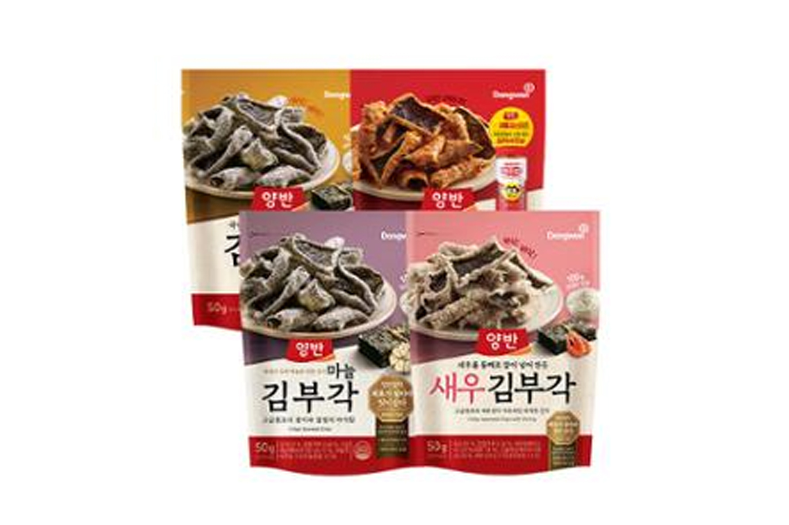

양반김 김부각 시리즈
양반김 김부각 — 바삭한 김 부각 스낵 시리즈.
양반김 김부각 시리즈는 김을 튀겨 만든 바삭한 부각 스낵입니다. 마트·기념품 코너·공항에서 선물용으로 잘 나갑니다.
양반김 김부각 시리즈는 김을 튀겨 만든 바삭한 부각 스낵입니다. 마트·기념품 코너·공항에서 선물용으로 잘 나갑니다.
기름·소금 함량이 있어 개봉 후 빨리 먹고, 습기 차지 않게 지퍼백에 보관하세요.
사는 팁
구매 팁 깨지기 쉬우니 캐리어 중앙에 넣고, 개별 포장 멀티팩을 고르면 나눠 주기 쉽습니다.